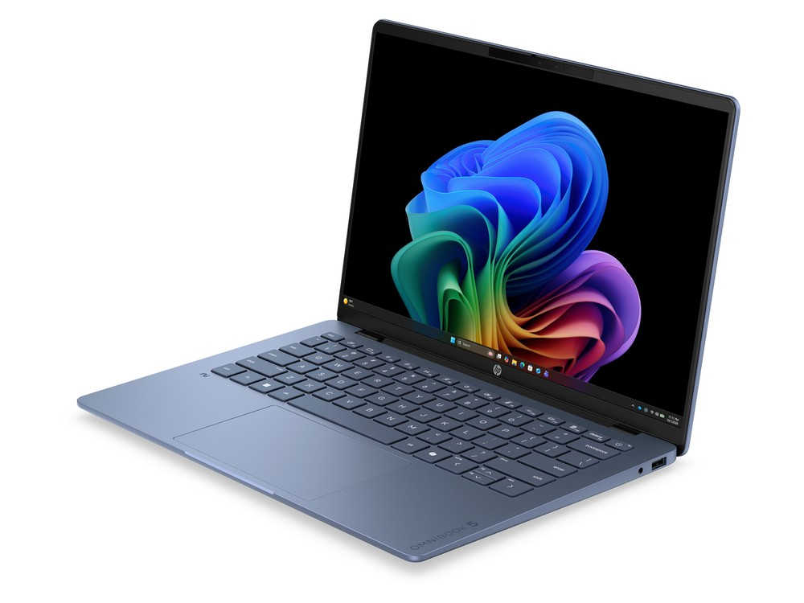

Ficha técnica
| Procesador | Intel Core Ultra 7 355 · 8 núcleos |
|---|---|
| Gráficos | Intel Graphics integrada |
| Memoria | 16 GB LPDDR5X |
| Almacenamiento | 512 GB SSD |
| Pantalla | 14" OLED 2K · 1920 × 1200 · 120 Hz |
| Peso | 1,34 kg |
| Autonomía | Sin dato del fabricante (batería de 59 Wh) |
| Sistema operativo | Windows 11 |
| Precio | 1249 € orientativo |
Para quién es
Su mejor baza es la portabilidad, con 92 de 100. Para jugar se queda en 44 de 100. Pesa 1,34 kg. Cuesta 1249 €, entre los cuatro más caros del catálogo.
- Encaja si lo que más te importa es llevarlo encima a diario, y el presupuesto llega a 1249 €.
- Busca otra opción si lo que prima es el gaming: aquí saca 44 de 100.
Se vende sin cargador: hay que añadir uno USB-C compatible.
Notas por uso
Escala de 0 a 100. En el comparador se recalculan según el perfil que elijas. La nota global es 78 / 100, la media de los cuatro apartados.
Alternativas por precio
Los tres modelos del catálogo que más se acercan a su precio:
- ASUS TUF Gaming A16−0 €
- MSI Thin 15+30 €
- MacBook Air 13" (M4)−50 €
Compáralo con otro modelo
Abre el comparador con este portátil ya cargado y enfréntalo a cualquiera de los 34.
Abrir el comparador